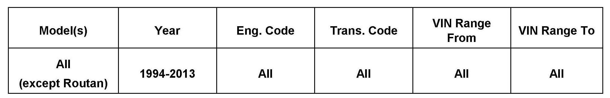
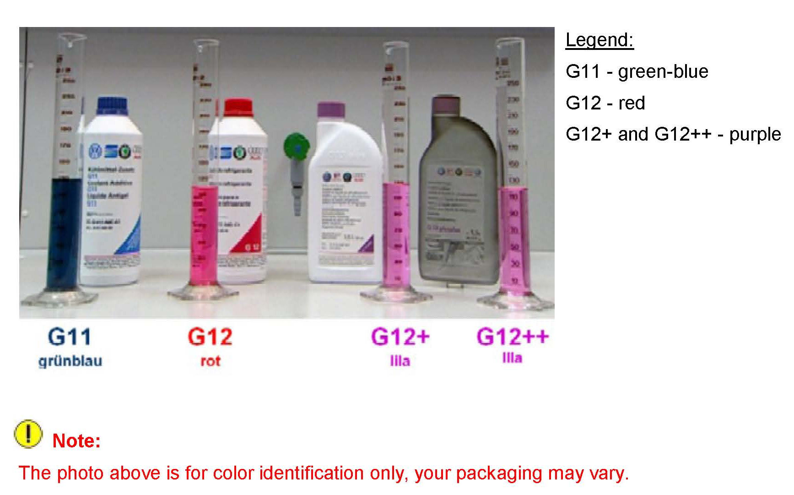
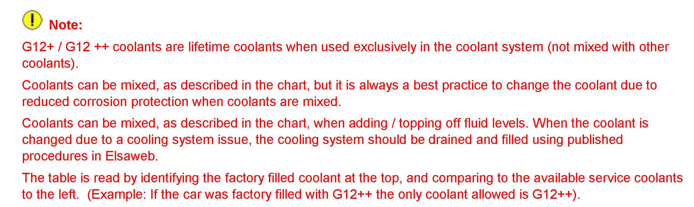
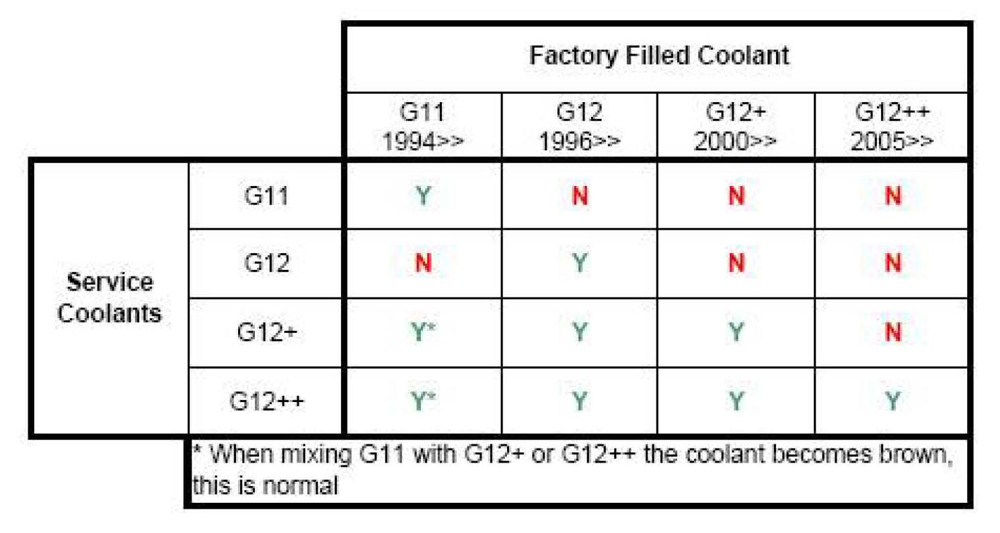

Cooling System - Coolant ID/Mixing/Improved Coolant
19 12 03June 27, 2012
2022548 Supersedes T.B. V191002 dated March 18, 2010 to add additional models, model year applicability, and correct drain and fill reference in the text.

Vehicle Information
Condition
Identifying and Mixing Factory Fill Engine Coolants
Discontinuation and mixing of Volkswagen approved engine coolants.
Technical Background
Coolants G11, G12 and G12+ have been replaced by an improved version.
New coolant G12++ will be introduced on all engines.
Production Solution
No production change required.
Service
Identify which coolant the vehicle was filled with from the factory.

The photo shows the color of each type of engine coolant.
Note:
The photo above is for color identification only, your packaging may vary.
The table identifies which coolant can be added to the factory coolant.


Note
Tip:
If a vehicle is found to have the incorrect coolant, the cooling system should be drained using the repair manual procedures in Elsa Web and then filled with the correct coolant.
Note:
Cooling system drain and fill due to coolant mixing, or incorrect coolant, is not covered by warranty.
Warranty
Information Only.
Required Parts and Tools
No Special Parts required.
No Special Tools required.
Additional Information
All part and service references provided in this Technical Bulletin are subject to change and/or removal.
Always check with your Parts Dept. and Repair Manuals for the latest information.